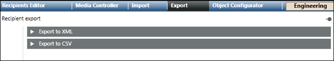

Export Tab
The Export tab allows the export of recipients to XML and CSV files.

- Export to XML: Export recipients to an XML file.
- Export to CSV: Export recipients to a CSV file.

NOTE:
The Export function is disabled for Windows App clients.
Export to XML
The Export to XML expander allows the export of recipients to an XML file.

- All: Displays all the configured recipient users.
- Search: Search for a recipient user.
- Selected for export: Displays the recipient users selected for export to an XML file.
- Export: Exports the selected recipient users to an XML file.
NOTE:
XML format is meant for system to system exchange.
Export to XML using Command
The Export From XML using the Command feature allows you to export all recipients in the Notification to an XML file through automatable Desigo CC commands.

- File Path: Displays the local XML file path of the Notification server.
- Export XML: Displays the File Path field and Send button on clicking Export XML.
- Send: Exports all recipients in the Notification to an XML file specified in the File Path.
Export to CSV
The Export to CSV expander allows you to configure a CSV mapping and export the recipients to a CSV file.

- All: The list of all configured recipient users.
- Search: Search for a recipient user.
- Selected for export: The recipient users selected for export to a CSV file.
- New: List of configured CSV mappings. One mapping needs to be configured for each CSV format.
- Save: Saves the new or updated CSV export mapping.
- Save as: Creates a copy of the selected mapping under a different name.
- Delete: Deletes the selected mapping.
- Quotations: For the selected mapping, defines the quotation marks used by the targeted CSV format.
- Mapping: List of configured CSV mappings. One mapping needs to be configured for each CSV format. This feature also allows you to select a saved CSV import mapping.
- Header row: For the selected mapping, indicates whether the targeted CSV format uses a header row. Select this check box if the CSV file contains a header row that describes the content of each column. When the Header Row check box is selected, Notification will ignore the first line/row of the CSV file during export.
- Columns: For the selected mapping, defines the mapping of CSV columns to recipient user properties. This feature allows you to create or update a CSV export mapping by entering a CSV Column and then selecting a Notification property that the selected CSV column will be mapped to during the import.
- Delimiter: For the selected mapping, defines the column delimiter used by the targeted CSV format. This feature allows you to select a column delimiter symbol that defines column boundaries in the CSV file. The supported column delimiter symbols are: comma, semicolon, tab and space.
- Export: Starts the recipient user export to a CSV file based on the configured mapping.
Export to CSV using Command
The Export to CSV using Command feature allows you to configure a CSV mapping and export the recipients to a CSV file.

- Mapping: Specify the mapping for the CSV export.
- File Path: Displays the local CSV file path of the MNS server.
- Export CSV: Displays the Mapping, File Path field and Send button.
- Send: Exports all recipients in the Notification at the specified file path in CSV format.